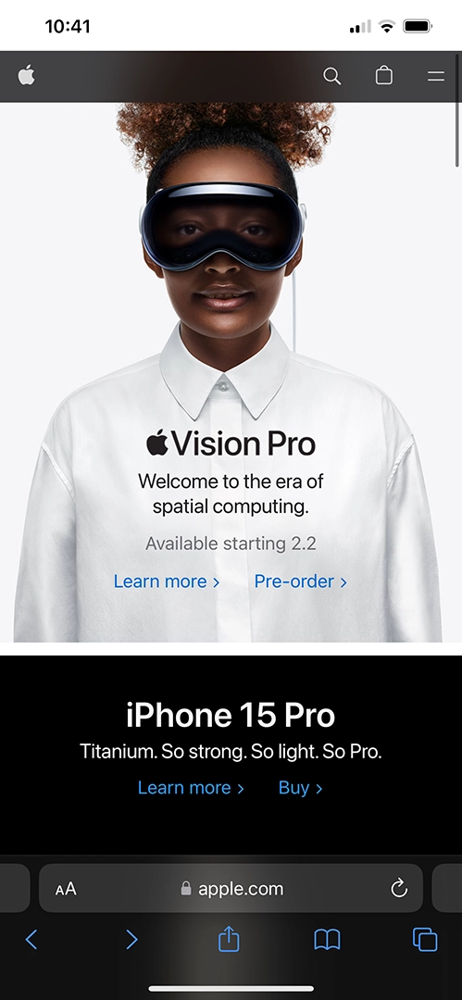
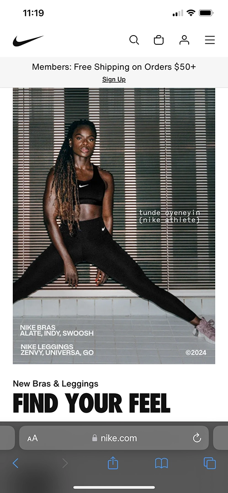
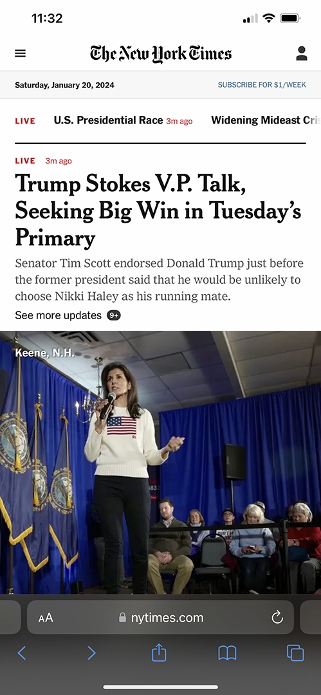

Visual Hierarchy
Apple
apple.com Apple uses visual Hierarchy on its site by giving its visitors clear visual examples of its product with large images always focusing first on the main product they are trying to showcase when you open their webpage. As you scroll down you fallow each product they want to have you focus one after another in order of relivance.
Rules of Thirds
Nike
nike.com Nike uses the rule of thirds on the images they have on their home page. They use combination of product photos, hadlines and other ascpects to show the footwear design the wish. They use the rules of thirds on their website as well to showcase all they want in order of priorities.
White Space and Clean Design
The New York Times
nytimes.com New York Times uses white space and clean design really well. For example the white space around their logo focus on it making it memarable when you first come to their webpage. the white space around the contect makes it have a more clean design and allows for the visitor to focus on each content wothout getting confused or mixed up between each content. Over all the webpage uses white space and clean design to create an elegant look for the webpage.